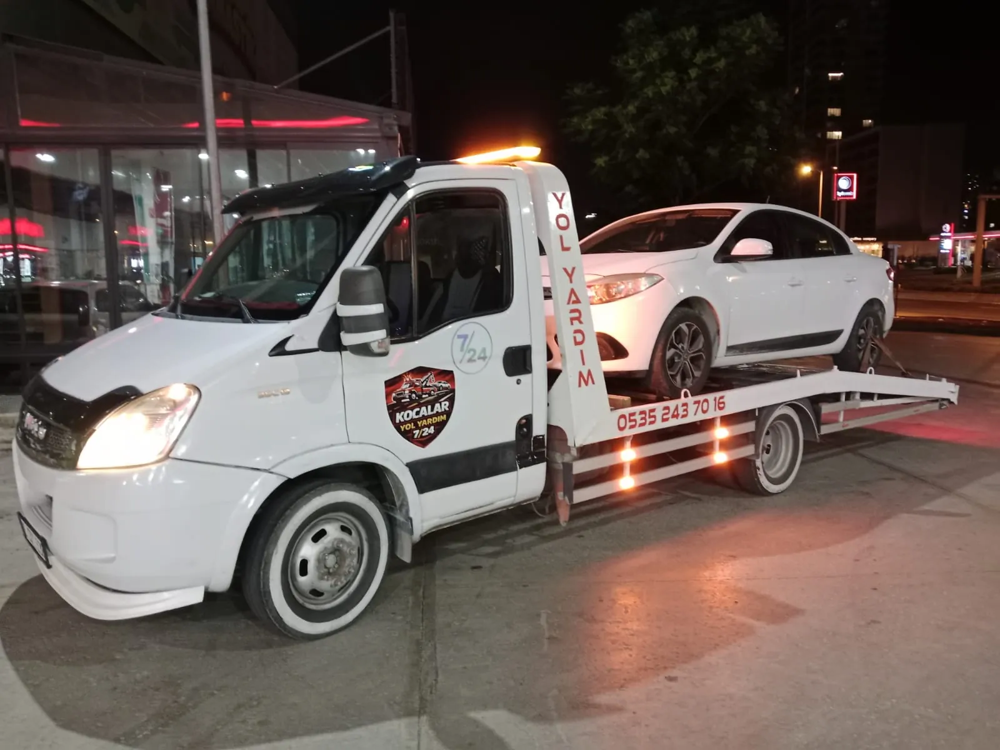

Lastik patladığında ilk karar, bulunduğunuz yerde lastik değiştirmenin güvenli olup olmadığıdır. Yoğun trafik, viraj, eğimli zemin veya dar emniyet şeridi varsa yol kenarında işlem yapmak risklidir. Jant hasarı veya yedek lastik bulunmaması durumunda çekici desteği gerekebilir.
Güvenli duruş
Güvenli duruş, yol yardım sürecinin doğru planlanmasında önemli bir aşamadır. Aracın bulunduğu ortam, trafik yoğunluğu ve teknik durum birlikte değerlendirilmelidir. Telefon görüşmesinde bu başlıkla ilgili ayrıntıları açıkça paylaşmak, uygun ekipman ve yaklaşımın seçilmesini kolaylaştırır. Her koşulda sürücü ve yol güvenliği önceliklidir.
Ankara içinde özellikle yoğun saatlerde alternatif güzergâhlar ve yaklaşım alanı önem kazanır. Fotoğraf veya kısa video, sözlü anlatımda atlanabilecek ayrıntıları gösterebilir. İşleme başlamadan önce beklenen adımların ve teslim noktasının teyit edilmesi önerilir.
Yedek lastik kontrolü
Yedek lastik kontrolü, yol yardım sürecinin doğru planlanmasında önemli bir aşamadır. Aracın bulunduğu ortam, trafik yoğunluğu ve teknik durum birlikte değerlendirilmelidir. Telefon görüşmesinde bu başlıkla ilgili ayrıntıları açıkça paylaşmak, uygun ekipman ve yaklaşımın seçilmesini kolaylaştırır. Her koşulda sürücü ve yol güvenliği önceliklidir.
Ankara içinde özellikle yoğun saatlerde alternatif güzergâhlar ve yaklaşım alanı önem kazanır. Fotoğraf veya kısa video, sözlü anlatımda atlanabilecek ayrıntıları gösterebilir. İşleme başlamadan önce beklenen adımların ve teslim noktasının teyit edilmesi önerilir.
Jant hasarı
Jant hasarı, yol yardım sürecinin doğru planlanmasında önemli bir aşamadır. Aracın bulunduğu ortam, trafik yoğunluğu ve teknik durum birlikte değerlendirilmelidir. Telefon görüşmesinde bu başlıkla ilgili ayrıntıları açıkça paylaşmak, uygun ekipman ve yaklaşımın seçilmesini kolaylaştırır. Her koşulda sürücü ve yol güvenliği önceliklidir.
Ankara içinde özellikle yoğun saatlerde alternatif güzergâhlar ve yaklaşım alanı önem kazanır. Fotoğraf veya kısa video, sözlü anlatımda atlanabilecek ayrıntıları gösterebilir. İşleme başlamadan önce beklenen adımların ve teslim noktasının teyit edilmesi önerilir.
Yol kenarı riski
Yol kenarı riski, yol yardım sürecinin doğru planlanmasında önemli bir aşamadır. Aracın bulunduğu ortam, trafik yoğunluğu ve teknik durum birlikte değerlendirilmelidir. Telefon görüşmesinde bu başlıkla ilgili ayrıntıları açıkça paylaşmak, uygun ekipman ve yaklaşımın seçilmesini kolaylaştırır. Her koşulda sürücü ve yol güvenliği önceliklidir.
Ankara içinde özellikle yoğun saatlerde alternatif güzergâhlar ve yaklaşım alanı önem kazanır. Fotoğraf veya kısa video, sözlü anlatımda atlanabilecek ayrıntıları gösterebilir. İşleme başlamadan önce beklenen adımların ve teslim noktasının teyit edilmesi önerilir.
Konum paylaşımı
Konum paylaşımı, yol yardım sürecinin doğru planlanmasında önemli bir aşamadır. Aracın bulunduğu ortam, trafik yoğunluğu ve teknik durum birlikte değerlendirilmelidir. Telefon görüşmesinde bu başlıkla ilgili ayrıntıları açıkça paylaşmak, uygun ekipman ve yaklaşımın seçilmesini kolaylaştırır. Her koşulda sürücü ve yol güvenliği önceliklidir.
Ankara içinde özellikle yoğun saatlerde alternatif güzergâhlar ve yaklaşım alanı önem kazanır. Fotoğraf veya kısa video, sözlü anlatımda atlanabilecek ayrıntıları gösterebilir. İşleme başlamadan önce beklenen adımların ve teslim noktasının teyit edilmesi önerilir.
Çekici çağırırken hazırlanabilecek kısa bilgi listesi
- Canlı konum ve yol yönü
- Araç marka-model, vites tipi ve yaklaşık boyut
- Arızanın veya hasarın kısa açıklaması
- Aracın teker ve direksiyon durumu
- Bırakılacak servis, otopark veya açık adres
- Varsa otopark girişi, rampa veya dar alan fotoğrafı
Güvenli taşıma neden önemlidir?
Yanlış yükleme, özellikle düşük şasili, otomatik vitesli veya kaza sonrası yürüyen aksamı zarar görmüş araçlarda ek hasar oluşturabilir. Platforma yaklaşım açısı, kayış noktaları ve araç dengesi kontrol edilmelidir. Taşıma sırasında kişisel eşyaların güvenli durumda olması, cam ve kapıların kapalı tutulması ve araç anahtarının teslim sürecinin netleştirilmesi faydalıdır.
Hizmet gelene kadar nasıl beklemelisiniz?
Aracınız güvenli bir alandaysa içinde beklemek bazı durumlarda uygun olabilir; ancak hızlı trafik akan yol, viraj, dar emniyet şeridi veya kaza riski bulunan bölgelerde bariyer arkasına geçmek daha güvenlidir. Reflektif yelek ve uyarı üçgeni yalnızca kendinizi tehlikeye atmadan yerleştirebiliyorsanız kullanılmalıdır. Çocukları ve evcil hayvanları trafik yönünden uzak tutun. Yol yardım aracının sizi bulabilmesi için telefonunuzu açık tutun, bilinmeyen numaralardan gelebilecek aramaları takip edin ve konumun değişmesi halinde yeni pini paylaşın.
Hizmet tamamlandığında yapılacak kontroller
Araç teslim noktasına indirildikten sonra dış görünümü, tekerlerin konumunu ve anahtar teslimini kontrol edin. Servise bırakılıyorsa teslim alan kişinin adını teyit edin. Planlı şehirler arası taşımada aracın mevcut çizik ve hasarlarının taşıma öncesi fotoğraflanması yararlıdır. Fiyat ve hizmet kapsamıyla ilgili konuşulan bilgileri mesaj üzerinden saklamak da süreci daha şeffaf hale getirir.
Kocalar Yol Yardım, Ankara genelindeki taleplerde araç ve yol durumuna göre bilgi alır. Net fiyat ve tahmini ulaşım bilgisi için 0535 243 70 16 numarasını arayabilir veya WhatsApp’tan konum gönderebilirsiniz.